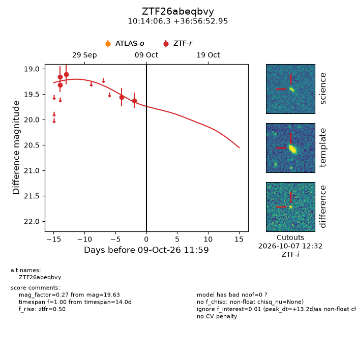
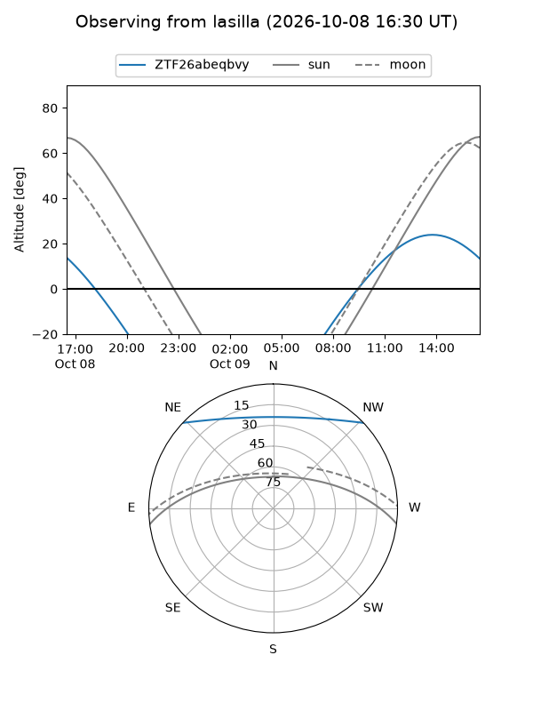
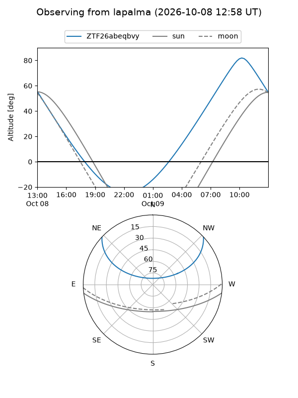
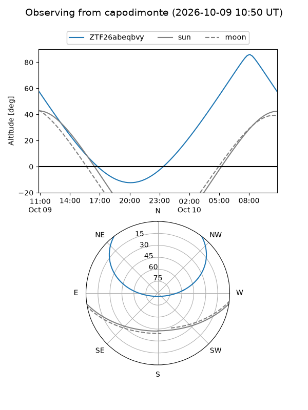
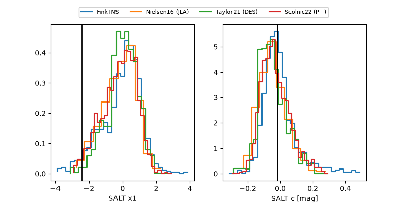

ZTF26abeqbvy
Target ZTF26abeqbvy at 2026-10-09 12:01
Aliases and brokers:
FINK-ZTF: ztf.fink-portal.org/ZTF26abeqbvy
Lasair-ZTF: lasair-ztf.lsst.ac.uk/objects/ZTF26abeqbvy
ALeRCE-ZTF: alerce.online/object/ZTF26abeqbvy
Direct TNS query: direct search
alt names
ZTF26abeqbvy (ztf,fink_ztf)
Coordinates:
equatorial (ra, dec) = 153.5262,+36.94804
equatorial (HMS+DMS) = 10:14:06.29,+36:56:52.95
galactic (l, b) = (186.3825,+55.51036)
Flags:
peak dt: +13.2
Photometry:
last ztfr=19.63
5 ztfr detections
Lightcurve

Visibility



Additional plots
